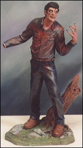
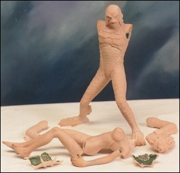

Alternative Images introduces a slew of new high quality 1/6 scale resin kits: Darkness, Evil Ash, The Nile Princess, The Paramour, and The Freebooter.
Darkness was sculpted by John Cole, this kit has 4 pieces. Evil Ash was also sculpted by John Cole, this kit has 8 pieces. The Nile Princess was sculpted by Mark Vantine, this kit has 8 pieces. The Paramour kit was sculpted by John Cole and Sam Greenwell, this kit has 11 pieces. (The feet and hands have been resculpted on the girl since the photo shown here was taken). The Freebooter, Conan the barbarian in a sword fight with a zombie barbarian, was sculpted by John Cole (no photo is available at this time).
 |
 |
| Darkness | Evil Ash |
 |
 |
| The Nile Princess | The Paramour |
The Gremlins in the Garage webzine is a production of Firefly Design. If you have any questions or comments please get in touch.
Copyright © 1994-1997 Firefly Design.